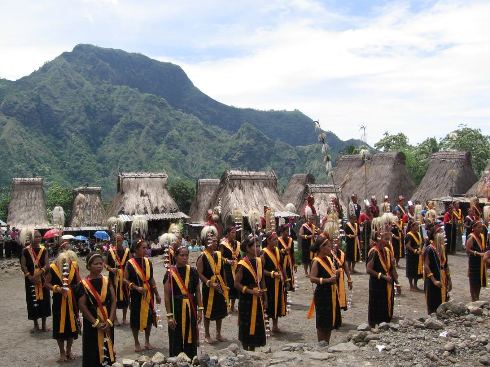

Upacara di Nusa Tenggara Timur
1. Upacara Penti
Upacara Penti adalah upacara adat yang dilakukan oleh masyarakat Manggarai di Nusa Tenggara Timur sebagai wujud dari rasa syukur atas hasil panen yang berlimpah. Pesta adat ini biasanya diselenggarakan setiap tahun antara bulan Juli, Agustus, September, atau sebelum Desember. Masyarakat Manggarai percaya bahwa keberhasilan panen di tahun selanjutnya ditentukan pada bulan-bulan tersebut. Dalam pelaksanaan upacara Penti memberikan hewan yang dijadikan sebagai kurban antara lain babi jantan dan ayam jantan. Babi jantan melambangkan keperkasaan dan keuletan dalam mengolah kebun, sedangkan ayam jantan melambangkan waktu dan alam. Upacara Penti merupakan salah satu tradisi penting bagi masyarakat Manggarai dalam mengucap rasa syukur mereka kepada Tuhan, leluhur, alam, dan sesama manusia.
2. upacara Reba
Upacara Reba adalah upacara adat terbesar dari masyarakat Ngada, Nusa Tenggara Timur. Upacara ini dirayakan oleh seluruh lapisan masyarakat, dan memiliki makna yang mendalam. Reba merupakan perayaan tradisional tahunan yang bertujuan untuk merayakan tahun baru adat, syukur atas hasil bumi, penghormatan terhadap leluhur, dan perayaan persatuan dalam rumah adat dan suku. Upacara Reba memiliki nilai-nilai moral, sosial, dan budaya yang tinggi. Upacara ini mengajarkan nilai-nilai kebersamaan, kerukunan, dan kegotongroyongan. Selain itu, upacara Reba juga menjadi sarana untuk memperkuat ikatan komunitas dan membangun rasa persatuan.
3. Upacara Lepa Bura

Upacara Lepa Bura adalah upacara adat yang dilakukan oleh masyarakat Lamaholot di Nusa Tenggara Timur untuk menyambut panen padi yang baru saja tiba. Pada awalnya, upacara Lepa Bura dilakukan oleh masyarakat Lamaholot yang menganut kepercayaan tradisional. Upacara ini bertujuan untuk memohon keselamatan dan kesejahteraan kepada Lera Wulan Tana Ekan, yaitu Tuhan Langit dan Bumi. Setelah masuknya agama Katolik ke Nusa Tenggara Timur, upacara Lepa Bura mengalami perubahan dengan memuja Tuhan Yesus Kristus.
4. Upacara Elkoil Oot
Upacara Elkoil Oot adalah upacara adat yang dilakukan oleh masyarakat NTT untuk memanggil hujan. Upacara ini dilakukan bila terjadi kekeringan di wilayah tersebut. Upacara Elkoil Oot dipimpin oleh seorang tetua adat yang akan memimpin doa dan ritual-ritual adat. Salah satu ritual yang paling penting adalah membunyikan Elkoil, yaitu sebuah gong pusaka yang tidak boleh diperjualbelikan atau dibunyikan sembarang waktu. Gong pusaka ini dipercaya memiliki kekuatan untuk memanggil hujan. Oleh karena itu, masyarakat NTT percaya bahwa dengan membunyikan gong pusaka, hujan akan turun dan mengakhiri kekeringan.
5. Upacara Zairo
Upacara Zairo adalah upacara adat yang dilakukan oleh masyarakat Sumba Barat, Nusa Tenggara Timur. Upacara ini bertujuan untuk memohon maaf kepada Dewi Padi, yaitu sosok yang dipercaya sebagai pelindung tanaman padi. Selain itu, upacara ini juga menjadi upaya untuk memohon keselamatan dan kemakmuran masyarakat. Upacara Zairo dilakukan ketika tanaman padi mengalami gagal panen, yang dipercaya disebabkan oleh sambaran petir. Masyarakat Sumba Barat percaya bahwa jiwa atau roh padi yang terbakar oleh sambaran petir akan melayang-layang tak tentu arah. Oleh karena itu, upacara Zairo dilakukan untuk memanggil kembali jiwa atau roh padi tersebut.
6. Upacara Pasola

Pasola adalah upacara ritual masyarakat Sumba bagian barat yang diselenggarakan untuk merayakan musim tanam padi. Upacara ini merupakan bentuk ritual untuk menghormati Marapu, memohon pengampunan, kemakmuran, dan hasil panen yang melimpah. Dalam upacara Pasola, dua kelompok pemuda yang mewakili klan atau desa yang berbeda saling melempar lembing kayu dari atas kuda. Lembing yang digunakan terbuat dari kayu pohon beringin yang telah dikeringkan dan diruncingkan. Pertandingan Pasola biasanya berlangsung selama beberapa hari, dan diakhiri dengan pertunjukan seni dan budaya Sumba. Upacara Pasola merupakan salah satu daya tarik wisata yang populer di Nusa Tenggara Timur.

Pasola adalah upacara ritual masyarakat Sumba bagian barat yang diselenggarakan untuk merayakan musim tanam padi. Upacara ini merupakan bentuk ritual untuk menghormati Marapu, memohon pengampunan, kemakmuran, dan hasil panen yang melimpah. Dalam upacara Pasola, dua kelompok pemuda yang mewakili klan atau desa yang berbeda saling melempar lembing kayu dari atas kuda. Lembing yang digunakan terbuat dari kayu pohon beringin yang telah dikeringkan dan diruncingkan. Pertandingan Pasola biasanya berlangsung selama beberapa hari, dan diakhiri dengan pertunjukan seni dan budaya Sumba. Upacara Pasola merupakan salah satu daya tarik wisata yang populer di Nusa Tenggara Timur.